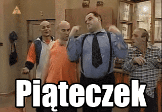

Teoria: a)Uwagi na temat JS
-kiedy powstała
W 1995 roku, na mocy
porozumienia z firmą Sun Microsystems, w zamian za włączenie do przeglądarki Netscape obsługi
technologii Java, język otrzymał oficjalną nazwę JavaScript.
-dlaczego jest to język skryptowy
Ponieważ ma być prezentowany przez przeglądarke, a nie aplikacje.
-gdzie jest wykonywany JS (kliet lub serwer)
JS jest wykonywany u klienta
-dlaczego jest to bezpieczne narzędzie
Jest to bezpeczne narzędzie, ponieważ ma ograniczony dostęp do zasobów komputera
-czy jest to język obiektowy , jeśli tak to dlaczego.
Jest to język obiektowy, ponieważ pozwala tworzyć strony internetowe i aplikacje o zaawansowanym stopniu.
b)Przepisz linie kody pod nimi wytłumaczenie:
<input
Pozwala stworzyć przycisk otwierający stronę
.................................wytłumaczenie...........................................................................................
window.open("obraz.html","okienko","toolbar=no,directories=no,menubar=no,height=280,width=160,top=200,left=200");
Pozwala otworzyć nowe okno
.................................wytłumaczenie...........................................................................................
toolbar=no ukrywa standarowy pasek narzędzi
directories=no, ukrywa przyciski katalogów
menubar=no, ukrywa menu przeglądarki
height=280, wysokość 280px
width=160, szerokość 160px
top=200, ustawia położenie okna względem góry ekranu
left=200 ustawia położenie okna względem lewej strony ekranu
window.close() zamyka aktualne okno
.................................wytłumaczenie...........................................................................................
